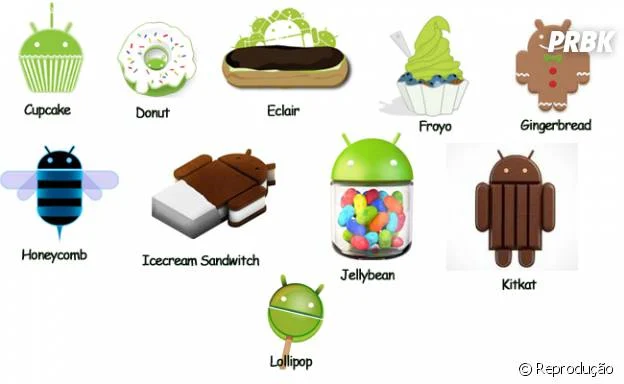

Por que as versões de Android têm nome de doce?
De acordo com o próprio Google, os nomes de doce surgiram como uma piada interna na empresa, algo que se iniciou com o Android 1.5 (Cupcake). Posteriormente, foi informado que a escolha dos nomes estava diretamente ligada ao fato de que os dispositivos móveis "adoçam as vidas" dos usuários.
Além disso, é possível notar que cada versão foi lançada com codinomes sempre em ordem alfabética, algo que durou até o Android 9. A partir do 10, o Google resolveu abandonar essa forma de nomenclatura e passou a adotar um esquema numérico.
Isso aconteceu porque a empresa queria não só simplicficar a nomenclatura, mas globalizar ainda mais a marca. O objetivo era que os nomes pudessem ser lidos e pronunciados com mais facilidade por diversas pessoas ao redor do mundo, independentemente do idioma falado.
Como tudo começou
Tudo começou em 2005, com o Google adquirindo uma empresa chamada Android (fundada por Andy Rubin, Rich Miner, Nick Sears e Chris White) e com o HTC Dream como o primeiro smartphone a rodar oficialmente esse sistema operacional, já no final de 2008. Já o nome Android veio da paixão de Andy por robôs. Juntamente com isso, o fato de que ele já detinha a propriedade do domínio do entedereço android.com, que funcionava como seu site pessoal até 2008.